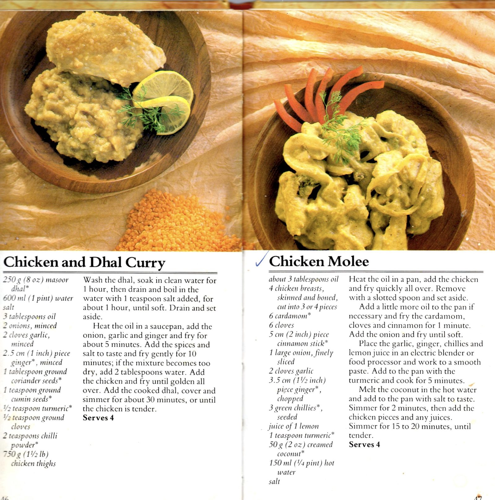

Mum's Chicken Mooli

Ingredients
Method
- Heat the oil in a pan, add the 4 chicken breasts and quickly fry all over. Remove the chicken with a slotted spoon.
- Add more oil to the pan and fry the 6 cardamom, 6 cloves and 5cm cinnamon stick for 1 min.
- Add the 1 large onion and fry until soft.
- Place the 2 garlic cloves, 3.5cm piece of ginger, 3 green chillies and juice of 1 lemon in a food processor and work to a smooth paste.
- Add the paste to the pan with the 1 tsp turmeric and cook for 5 mins.
- Melt the 50g creamed coconut in the 150ml hot water and add to the pan and season.
- Simmer for 2 mins, then add the chicken and any juices.
- Simmer for 15-20 mins until tender.